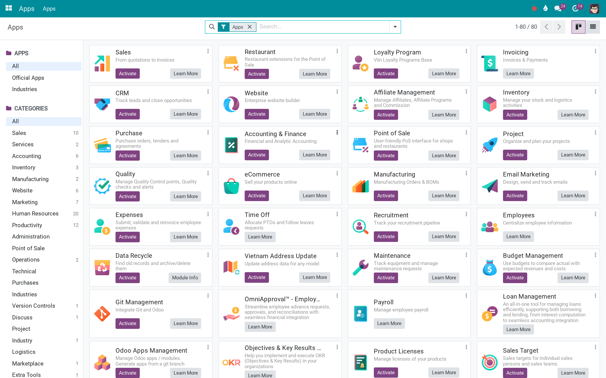

Odoo Community
Odoo Enterprise
Viindoo Cloud
The shared library every Viindoo app is built on
Not an app you open - the layer underneath the apps: a favicon per company, a filter that finds the bridge modules you should have installed, barcodes in reports, and a handful of guards that keep permissions fast and data honest.
Viindoo Base (technical name to_base) is an Odoo 19.0 app for Odoo Community and Odoo Enterprise and Viindoo Cloud, built for administrator, implementer, everyone else.
